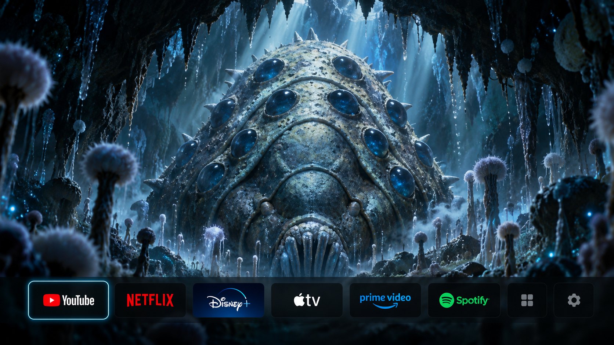

This preview demonstrates animations only. It cannot launch TV apps.
Yellow outline marks the selected eye. Width and height are saved automatically.
Use Left / Right to select, Enter to preview, Escape to go back. Tap or swipe on your phone.